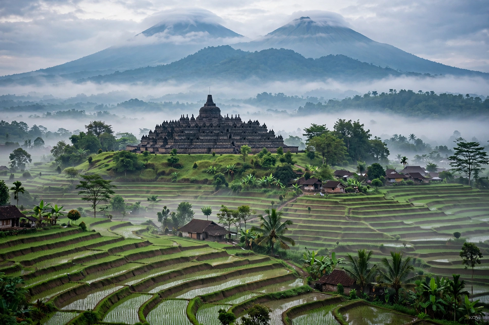

Central Java (Indonesian: Jawa Tengah) is a province of Indonesia on the island of Java. Its capital and largest city is Semarang. It is bordered by West Java, East Java, Yogyakarta and the Indian Ocean and Java Sea.

| Capital | Semarang |
|---|---|
| Area | about 34,000 km² |
| Population | about 37 million (2020s) |
| Highest point | Mount Slamet |
A chain of volcanoes runs through the province, including Mount Merapi, Merbabu, Sumbing, Sindoro and Slamet, with fertile plains to the north and south coasts.
Central Java was the heartland of early Javanese kingdoms including Mataram, which built the great temples of Borobudur (Buddhist) and Prambanan (Hindu, dedicated to the Trimurti). It later came under Dutch colonial rule and became part of independent Indonesia.
The province, with neighbouring Yogyakarta, is considered the heart of Javanese culture: gamelan music, wayang shadow puppetry, batik, and the epics Ramayana and Mahabharata remain central. Major cities include Semarang, Surakarta (Solo), Magelang and Pekalongan.